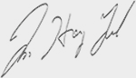

폴리 로고
주 메뉴

HOME >
ABOUT POLY >
Welcome to POLY
영어로 하는 최고의 인재교육,
폴리에 오신것을 환영합니다.
지난 10여 년의 시간 동안 폴리가 만든 영어교육의 기준은,
우리나라 영어교육 전반에 거대한 영향력을 발휘했습니다.
선도적 교육과정과 학습프로그램은 우리나라 영어교육의 질적 향상을
이끌었으며, 폴리가 양성한 인재는 학습자의 귀감이자 지향점이
되었습니다.
폴리는 이러한 결실을 자랑이 아닌 책임으로 생각합니다.
최고라는 찬사와 신뢰의 막중함을 알기에 안주하지 않고, 더 좋은 교육
서비스 제공을 위해 노력하겠습니다.
(주)코리아폴리스쿨 CEO ALEX IM

하단내용